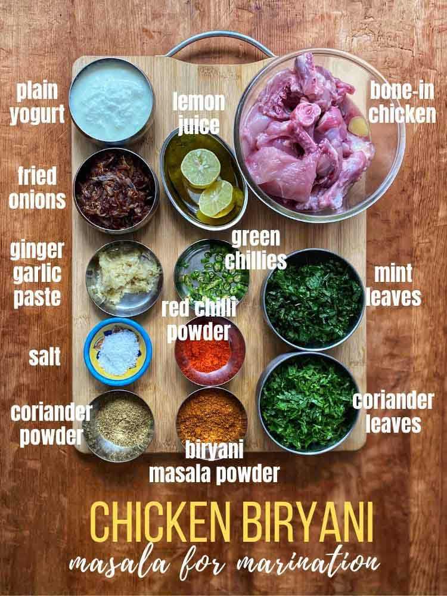
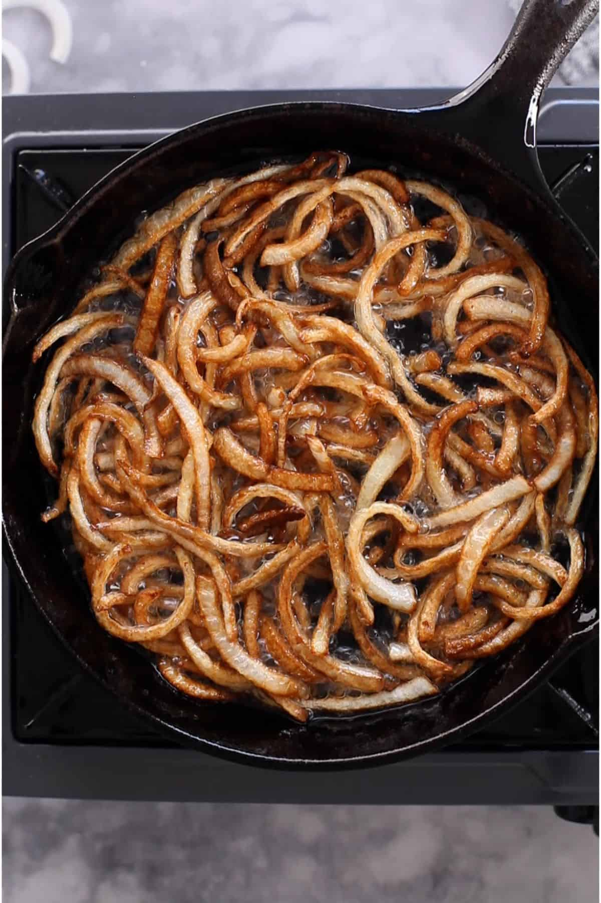

STEPS TO PREPARE HYDERABADI CHICKEN BIRYANI
1. Ingredients Preparation
- 2 cups Basmati Rice (soaked for 30 minutes)
- 500 grams Chicken (washed and cut into pieces)
- 1 cup Yogurt (curd)
- 2 large Onions (sliced thin)
- 2 Tomatoes (chopped)
- 2 tbsp Ginger-Garlic Paste
- Whole spices (bay leaf, cardamom, cinnamon, cloves)
- 1/2 tsp Turmeric Powder
- 1 tsp Red Chili Powder
- 1 tsp Biryani Masala or Garam Masala
- Fresh coriander and mint leaves (chopped)
- Saffron soaked in warm milk (optional)
- Salt to taste
- Oil & Ghee for cooking

2. Cooking Hyderabadi Chicken Biryani
- Marinate the Chicken:
- Mix chicken with yogurt, ginger-garlic paste, turmeric, red chili powder, salt, and biryani masala.
- Add chopped mint and coriander leaves.
- Marinate at least 1 hour.
- Fry the Onions:
- Heat oil/ghee and fry sliced onions till golden brown.
- Set aside some for garnishing.

- Prepare the Rice:
- Boil water with whole spices and salt.
- Add soaked rice and cook 70%.
- Drain and keep aside.
- Layer and Cook Biryani:
- Layer marinated chicken at the bottom of a pot.
- Spread half-cooked rice on top.
- Sprinkle fried onions, herbs, saffron milk.
- Repeat layers if needed and cover tightly.
- Cook on dum (low heat) for 20–25 minutes.
- Serve:
- Let rest for 10 minutes before opening lid.
- Serve hot with raita, salan, or boiled eggs.
BIRYANI IS READY..!
LET'S PARTY TONIGHT 🎉